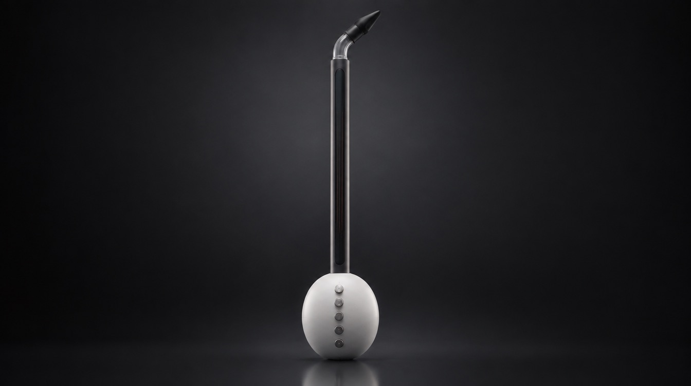
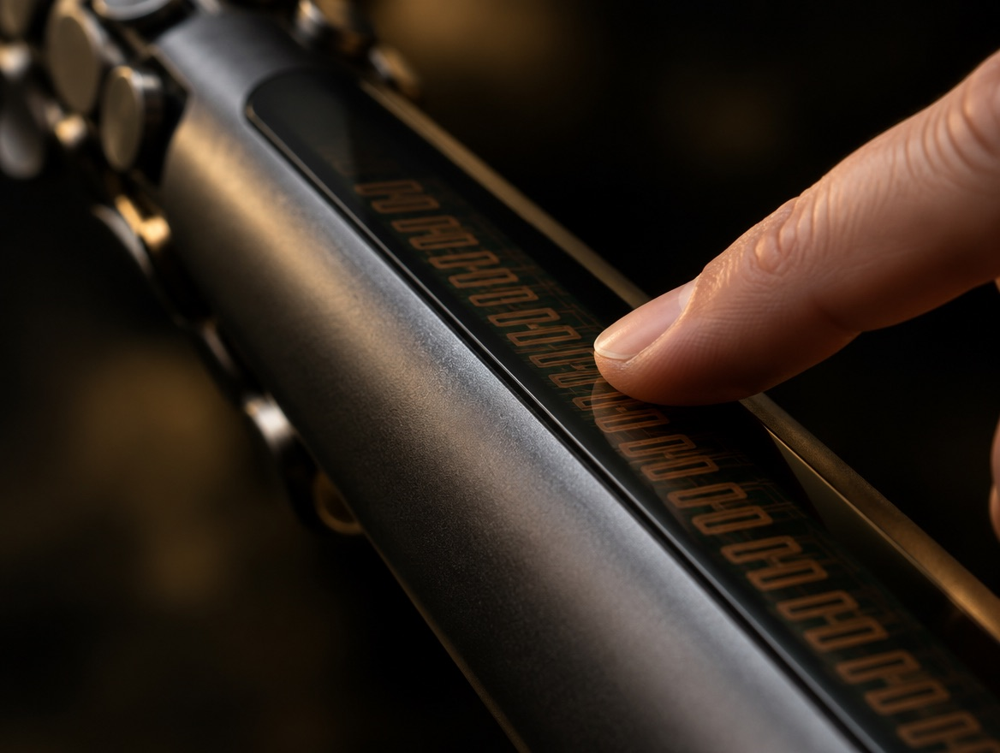
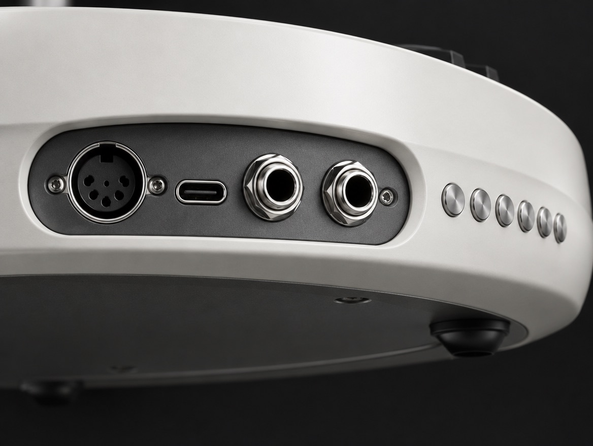
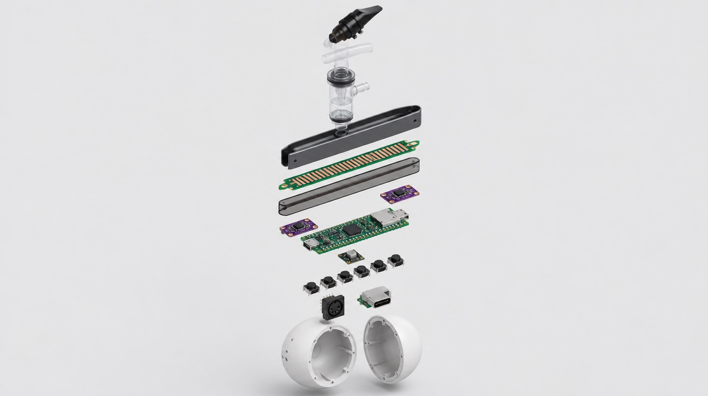
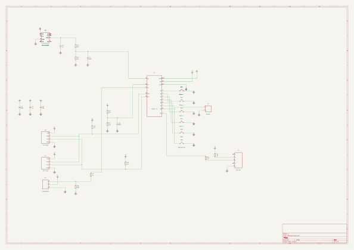

L'Otamatone diventato strumento vero. Un dito che scivola per le note, il fiato per la dinamica, il MIDI per suonare qualsiasi suono.
L'Otamatone è nato come giocattolo: si preme il manico, si strizza la testa, e la nota miagola. Ci è piaciuto il gesto, non il giocattolo. Alidu Otamatone prende quel manico da far scivolare e lo trasforma in uno strumento da palco, che si suona come un fiato e parla a qualsiasi sintetizzatore.
Lungo il manico corre un nastro di 50 cm. Scivolando si passa da una nota all'altra senza scalini, come su una corda senza tasti: glissando, vibrato, quarti di tono.
Si soffia in un bocchino da sassofono. Un sensore di pressione misura il soffio: piano, forte, crescendo, accenti. La nota nasce e muore con il respiro, come in un vero strumento a fiato.
Sei pulsanti sulla testa: ottava su e giù, suono successivo e precedente, e un tasto per i comandi speciali. Il suono non sta dentro lo strumento: lo sceglie il synth, via MIDI.
Il bocchino in alto, la mano sinistra sul manico, la destra sulla testa a portata dei pulsanti. Un solo cavo verso il computer o verso la tastiera: Alidu Otamatone non ha un suono suo, li ha tutti.
Stessa forma a croma, stesso gesto del dito che scivola. Tutto il resto è stato ripensato per suonare sul serio, e per durare.
| Aspetto | Otamatone tradizionale | Alidu Otamatone |
|---|---|---|
| Che cos'è | Un giocattolo musicale, simpatico e volutamente buffo. | Uno strumento da studio e da palco, progettato per musicisti. |
| Sensore delle note | Una membrana che si schiaccia: due strati che si toccano. Con l'uso si consuma, si sporca e comincia a gracchiare. | Un nastro capacitivo sotto una lastra protettiva: il dito non tocca mai l'elettronica. Niente si piega, niente striscia, niente si consuma. |
| Dinamica | Assente: il volume è sempre lo stesso. Si strizza la testa per un effetto "wa-wa". | Con il fiato, in tempo reale: dal sussurro al forte, con crescendo e accenti, come in un sassofono. |
| Precisione | Intonazione difficile, nessun riferimento. | Altezza letta 500 volte al secondo. Regolazione "magnetismo": da libero, senza tasti, fino a note perfettamente intonate. |
| Suono | Un solo timbro, da un piccolo altoparlante nella testa. | Qualsiasi suono: comanda via MIDI sintetizzatori, campionatori e programmi musicali. |
| Collegamenti | Al massimo un'uscita cuffie, secondo il modello. | MIDI USB, MIDI DIN 5 poli, pedale sustain, pedale espressione. |
| Cambio suono e ottava | Un selettore a tre posizioni. | Due pulsanti per l'ottava (±3 ottave), due per il suono (128 suoni per 128 banchi), uno per le funzioni speciali. |
| Alimentazione | Pile. | Dal cavo USB: nessuna pila da cambiare. |
| Riparabilità | Chiuso: si butta e se ne compra un altro. | Open source: schemi, firmware e istruzioni sono pubblici. Ogni pezzo si trova e si sostituisce. |

Gli strumenti elettronici muoiono quasi sempre nello stesso modo: si consuma la parte che tocchi. Una membrana regge circa un milione di pressioni, poi comincia a sbagliare. Per questo Alidu Otamatone non ne ha.
Sotto il vetro del manico ci sono 60 elettrodi di rame su un circuito stampato. Il dito non li tocca: li "sente" attraverso la lastra, per effetto capacitivo, come lo schermo di un telefono. Senza contatto non c'è attrito, e senza attrito non c'è usura.
60 elettrodi letti da due schede Trill Craft. Una lastra di policarbonato o vetro da 2 mm li protegge da graffi, sudore e polvere.
Il soffio passa da una trappola per la condensa e da uno sfiato calibrato. Il sensore sta a lato, in un ramo chiuso: misura la pressione senza che l'umidità lo raggiunga.
La presa micro-USB della scheda non viene mai toccata: il cavo entra in una presa USB-C robusta, avvitata al guscio. Le prese MIDI e jack sono metalliche, da pannello.
Pulsanti metallici dichiarati per decine di milioni di pressioni, smontabili e sostituibili uno per uno.
Il calore della mano e la temperatura spostano le letture. Il firmware insegue lentamente lo zero del fiato e la linea di base del nastro quando nessuno suona.
Suono, banco e ottava si ricordano allo spegnimento, ma vengono scritti solo se cambiano e dopo 5 secondi di quiete: la memoria interna non si logora.
Gli elettrodi sono a pettine e si intrecciano con i vicini: così il dito ne copre sempre due o tre, e la media pesata delle letture dà una posizione continua, molto più fine della distanza fra un elettrodo e l'altro.
Questo è il manico, steso in orizzontale. Premi e trascina col mouse o col dito per scegliere la nota. Il volume lo dà il cursore "fiato", oppure attiva il microfono e soffia davvero vicino al telefono o al computer.
Il suono qui è una simulazione semplice. Lo strumento vero non ha un suono suo: manda le note via MIDI al sintetizzatore che preferisci. Il microfono resta sul tuo dispositivo: niente viene registrato né inviato.

Tutto si fa senza guardare. Il tasto Shift raddoppia le funzioni degli altri. Suono, banco, ottava e magnetismo restano in memoria quando si spegne.
Scende di un'ottava, fino a −3.
con Shift: meno magnetismo.
Sale di un'ottava, fino a +3.
con Shift: più magnetismo.
Suono precedente (Program Change).
con Shift: banco precedente.
Suono successivo (Program Change).
con Shift: banco successivo.
Tenuto premuto, dà la seconda funzione agli altri pulsanti.
Attiva l'armonia negativa in AliChord.
con Shift: silenzia tutto e ricalibra.

Immagine concettuale: mostra le parti, non le misure definitive.
| Parte | Componente |
|---|---|
| Cervello | Teensy 4.1 (processore a 600 MHz) |
| Nastro | 2 × Trill Craft (30 canali capacitivi ciascuno) + circuito con 60 elettrodi a pettine, 500 mm |
| Protezione | Lastra di policarbonato o vetro, 2 mm |
| Fiato | Sensore di pressione MPXV7002DP (±2 kPa) + trappola condensa + sfiato 0,2–0,3 mm |
| Bocchino | Bocchino da sassofono o da controller a fiato, tubo in silicone |
| Uscite | MIDI USB, MIDI DIN 5 poli |
| Ingressi | Pedale sustain (jack mono), pedale espressione (jack stereo) |
| Comandi | 6 pulsanti metallici momentanei |
| Piedino | Funzione |
|---|---|
| A0 · 14 | Sensore fiato (partitore 4,7 k / 12 k) |
| A2 · 16 | Controllo dei 5 V, per compensare il sensore |
| A3 · 17 | Pedale espressione |
| 18 · 19 | I2C verso i due Trill Craft (indirizzi 0x30 e 0x31) |
| 2 … 7 | Pulsanti, verso massa |
| 8 | Pedale sustain |
| TX1 · 1 | MIDI DIN (33 Ω e 10 Ω, valori per 3,3 V) |
Disegnato in KiCad, controllo delle regole elettriche superato senza errori. Clicca per aprirlo a tutto schermo.

Il sensore misura fino a 2 kPa: a fondo scala l'aria si comprime solo del 2%. Per non saturare subito serve una camera di riserva da 25–30 ml. Lo sfiato calibrato da 0,2–0,3 mm fa sì che la pressione ricada a zero in 2–4 secondi, compensando anche il calore della mano, che da solo sposterebbe la lettura di 0,35 kPa per grado.
| Note | Nota on/off, velocità dal fiato iniziale |
| Pitch bend | Intonazione continua, ±12 semitoni (impostati via RPN) |
| CC 2 e 11 | Fiato (Breath ed Expression) |
| CC 4 | Pedale espressione |
| CC 64 | Sustain |
| CC 0 + PC | Banco e suono |
| CC 85 | Armonia negativa (AliChord) |
Un unico file per Arduino e Teensyduino, commentato in italiano. Legge il nastro 500 volte al secondo, filtra il tremolio del dito senza rallentarlo, trasforma la posizione in nota e intonazione fine, e manda tutto contemporaneamente su USB e su DIN.
1. Installa Arduino IDE e il supporto Teensy (Teensyduino) 2. Dal Gestore librerie installa "Trill" 3. Apri firmware/Alidu Otamatone/AliBreath.ino 4. Strumenti → Scheda: Teensy 4.1 · USB Type: MIDI 5. Carica. Non toccare il nastro e non soffiare per 1 secondo all'accensione: è il momento in cui lo strumento si tara. Oppure, senza programmare: apri Teensy Loader e carica AliBreath.ino.hex
Foto e video sono immagini concettuali generate al computer per mostrare il progetto: il prototipo fisico non è ancora stato costruito.
Diciamo le cose come stanno, così chi vuole costruirlo sa da dove parte.
Ogni file del progetto è qui, libero. Puoi leggerlo, costruirlo, modificarlo e condividerlo. Chiediamo solo di citare il progetto e di lasciare libere anche le tue modifiche.
CERN Open Hardware Licence v2, versione "fortemente reciproca" (CERN-OHL-S).
GNU General Public License v3. La libreria Trill di Bela, usata dal firmware, ha licenza BSD.
Creative Commons Attribuzione – Condividi allo stesso modo 4.0 (CC BY-SA 4.0).